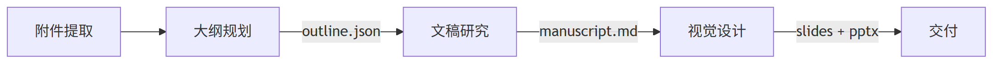

4 角色流水线架构：attachment-reader → planner → researcher → designer

4 角色各司其职，强制分工与校验
attachment-reader：MinerU-first 提取结构化内容
ppt-planner：设计大纲结构 + 需求对齐
ppt-researcher：调研信息 + 写文稿 + 自审
ppt-designer：视觉平衡 HTML 幻灯片 + 逐页 QA
双层质量保证：脚本硬校验 + LLM 自审